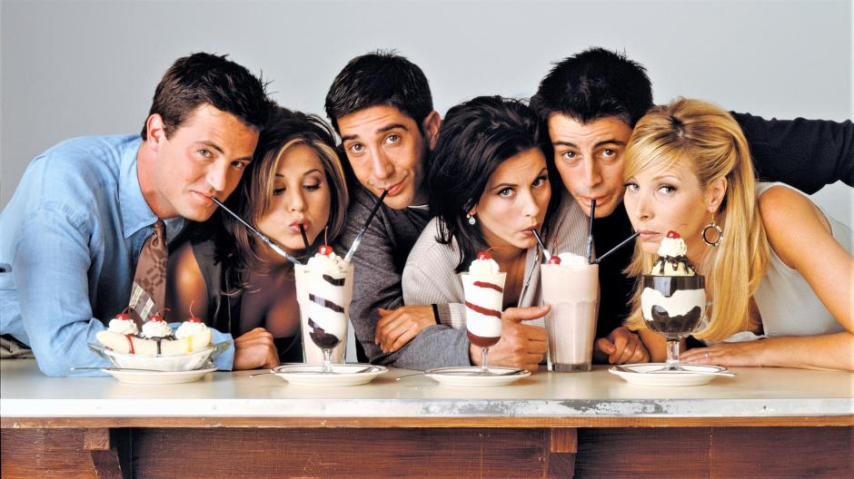

Merhaba. Ben Gamze Sezgin! İstanbul'da yaşıyorum. Seyahat etmeyi, spor yapmayı, yabancı dizi izlemeyi ve kitap okumayı çok seviyorum. Sitcom ve aksiyon dizilerini izlerken çok keyif alıyorum. Bunların yanında akademik hayatımın içinde olduğu için matematiği ve yazılımı çok seviyorum.
Bunların arasında en sevdiğim Friends'tir. Tekrar tekrar izlesem de hiç sıkılmıyorum.
Friends: 1990'ların Manhattanı'nda iş hayatının, aşkın ve gündelik yaşamın zorluklarıyla uğraşan 20'li yaşlardaki altı arkadaşın komik maceralarını anlatıyor.